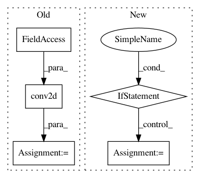

ab75f215b6d65704e7272e0a411d9d082c029846,keras/layers/convolutional.py,Convolution2D,get_output,#Convolution2D#Any#,177
Before Change
if border_mode == "same":
border_mode = "full"
conv_out = T.nnet.conv.conv2d(X, self.W,
border_mode=border_mode,
subsample=self.subsample)
if self.border_mode == "same":
shift_x = (self.nb_row - 1) // 2
shift_y = (self.nb_col - 1) // 2
conv_out = conv_out[:, :, shift_x:X.shape[2] + shift_x, shift_y:X.shape[3] + shift_y]
After Change
def get_output(self, train):
X = self.get_input(train)
border_mode = self.border_mode
if border_mode == "same":
assert(self.subsample == (1, 1))
pad_x = (self.nb_row - self.subsample[0]) // 2
pad_y = (self.nb_col - self.subsample[1]) // 2
conv_out = dnn.dnn_conv(img=X,
kerns=self.W,
border_mode=(pad_x, pad_y))
else:
conv_out = dnn.dnn_conv(img=X,
kerns=self.W,
border_mode=border_mode,
subsample=self.subsample)
return self.activation(conv_out + self.b.dimshuffle("x", 0, "x", "x"))
def get_config(self):
return {"name": self.__class__.__name__,
In pattern: SUPERPATTERN
Frequency: 3
Non-data size: 5
Instances
Project Name: keras-team/keras
Commit Name: ab75f215b6d65704e7272e0a411d9d082c029846
Time: 2015-08-13
Author: cheng.guo.work@gmail.com
File Name: keras/layers/convolutional.py
Class Name: Convolution2D
Method Name: get_output
Project Name: deepchem/deepchem
Commit Name: 887f94bd4f292778622304ba627727a6dacad43f
Time: 2018-03-25
Author: peastman@stanford.edu
File Name: deepchem/models/tensorgraph/layers.py
Class Name: Conv2D
Method Name: create_tensor
Project Name: HyperGAN/HyperGAN
Commit Name: d0334962f6602fd835b0ed7219a972ebc36bb0fd
Time: 2017-03-23
Author: mikkel@255bits.com
File Name: hypergan/discriminators/pyramid_discriminator.py
Class Name:
Method Name: discriminator